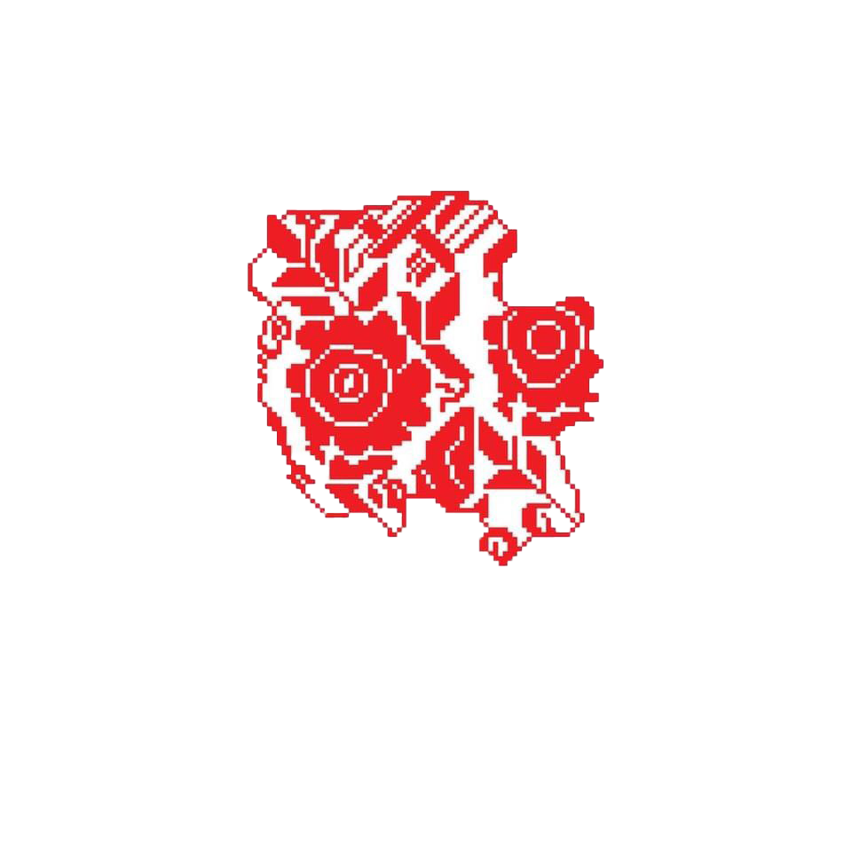

مميزات تطريز عكا
① الألوان
- الأزرق الفاتح—رمز البحر ومياه المدينة التاريخية .
- الأخضر الزيتوني—ارتباطًا بالأراضي الزراعية والزيتون.
- الأحمر الداكن—لون تقليدي فلسطيني يعكس القوة والتاريخ.
- البيج والكريمي—لتفاصيل الخلفيات والخيوط الدقيقة.
② الغرز
- غرزة الصليب (الفلة) المستخدمة بدقة في النقوش الهندسية.
- غرزة السلسلة—تُستخدم في حواف الأقمشة لإبراز الإطارات الزخرفية.
- غرزة السحب—تظهر غالبًا على القمصان والملابس الصيفية.
- غرزة النقاط—لإضافة التفاصيل الدقيقة والزخارف الصغيرة.
③ الرموز الشائعة
- الامواج المتعرجة: تشير للحركة البحرية والنشاط التجاري القديم .
- الحصون والاسوار: تعكس تاريخ المدينة العريق وحصونها الشهيرة.
- شجرة الزيتون: رمز السلام والازدهار والارتباط بالأراض.
- الطيور البحرية: رمز للحرية والبحر, غالبًا تظهر في ملابس المناسبات.